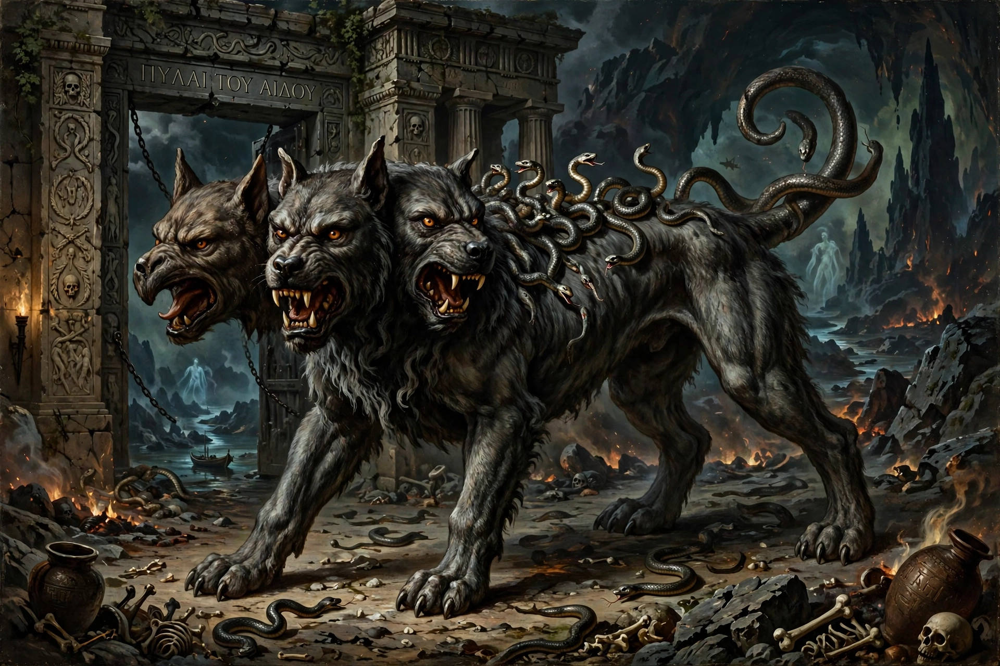

In Greek mythology, Cerberus, often called the hound of Hades, is a multi-headed dog that guards the gates of the Underworld to prevent the dead from leaving. He was the offspring of Echidna and Typhon, and brother of Orthrus and the Lernaean Hydra.

| Parents | Echidna and Typhon |
|---|---|
| Abode | Gates of Hades |
Accounts vary: Hesiod gave Cerberus fifty heads, Horace a hundred, but later tradition and art settled on three heads, a serpent's tail, and snakes protruding from his body. He welcomed entering shades but devoured anyone trying to escape, or living visitors who tried to enter without leave.
The twelfth and final labour of Heracles was to capture Cerberus alive without weapons. With permission of Hades, Heracles wrestled the hound into submission, carried him to Eurystheus — who hid in a jar in fright — and then returned him to the Underworld. Orpheus charmed Cerberus with music, and the Sibyl in Virgil's Aeneid pacified him with a honey-cake.